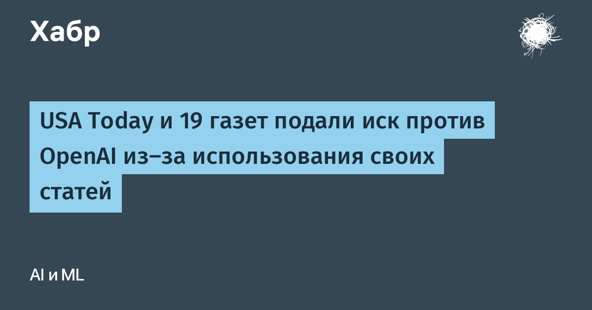

8 октября 2026 года USA Today Co. (компания, недавно переименованная из Gannett) и связанные с ней юридические лица подали иск против OpenAI в федеральный суд Южного округа Нью-Йорка на Манхэттене. Дело зарегистрировано как USA TODAY Co., Inc. et al. v. OpenAI Foundation, номер 1:26-cv-08892. Истцы представляют 19 изданий сети — от флагманской USA Today до региональных газет в тринадцати штатах; всего в иске четырнадцать корпоративных истцов.
Медиагигант требует возмещения ущерба на сумму свыше 250 млн долларов, отчисления прибыли, выведенной на чужом контенте, постоянного судебного запрета и уничтожения моделей вместе с обучающими выборками, собранными из его статей.
По версии истцов, OpenAI без разрешения скопировала сотни тысяч статей с сайтов изданий и скормила их языковым моделям ChatGPT. В 79-страничном иске — цифры не абстрактные: только по самой USA Today названо 83 266 скопированных материалов, а в обучающем корпусе WebText исследователи насчитали около 160 000 записей сети. Формулировка прямая: лицензия не была получена, разрешения никто не спрашивал, использование коммерческое.
Вторая претензия касается не обучения, а выдачи. Истцы утверждают, что ответы чат-бота пересказывают и «упаковывают» их журналистику настолько полно, что читателю незачем идти на сайт оригинал и платить за подписку. Юридический центр спора — доктрина добросовестного использования (fair use): суду предстоит решить, где обучение модели заканчивается и начинается присвоение чужого труда.
Иск USA Today Co. — не единичный случай, а ещё один пласт в серии процессов против разработчиков генеративного ИИ. Ранее New York Times и другие правообладатели подали отдельные иски к OpenAI и Microsoft; в сентябре аналогичные претензии предъявили мелкие издатели Emmerich Newspapers, Ojai Media и группа Coopwood. Иски различаются составом обвинений и доказательствами, и исход одного автоматически не решает судьбу остальных.
Ставки для отрасли здесь в том, чем закончится спор о плате за обучающие данные. Если суд встанет на сторону издателей, разработчикам придётся массово лицензировать корпуса, менять способы сбора данных и закрывать доступ к части материалов. Если победит fair use, издательства потеряют последний рычаг давления в переговорах о лицензионных выплатах — а договорённостей об обучении у USA Today Co. с OpenAI, по её же словам, нет.
Отдельного пресс-релиза сторона истца не публиковала: первоисточником фактов служит сам текст иска в федеральном судебном реестре, а детали разобраны профильными и деловыми изданиями.